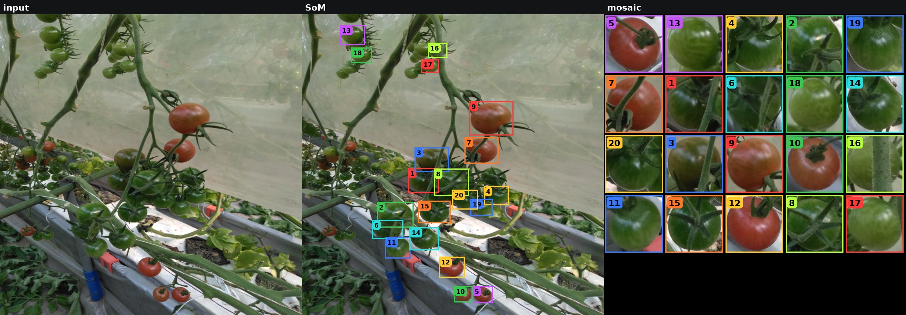
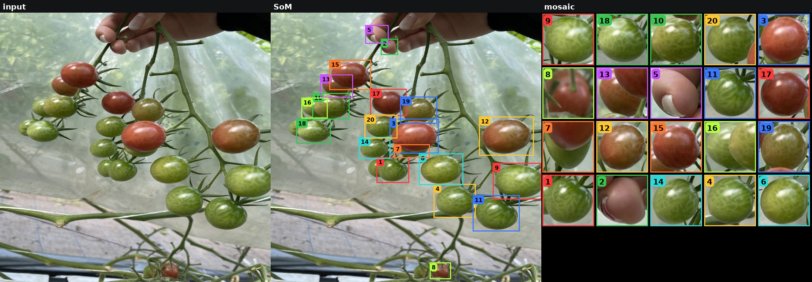
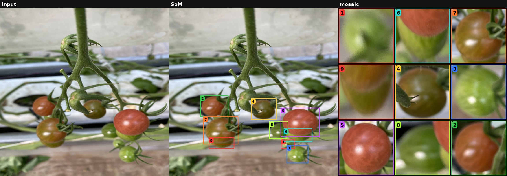
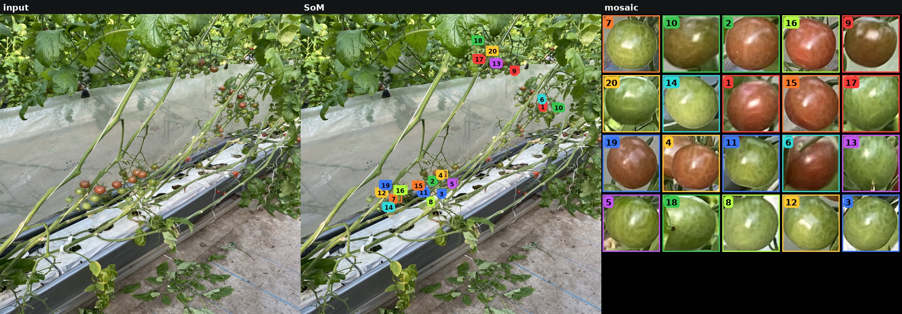
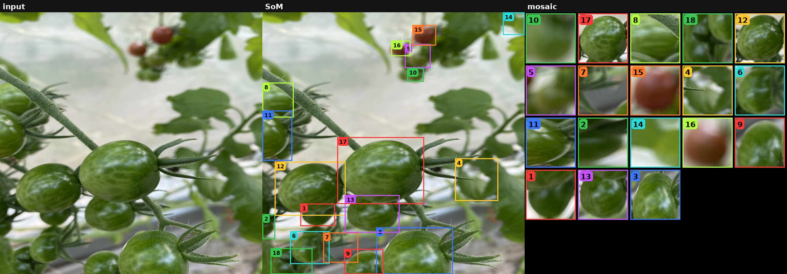

Eval uses one JSON (ripe/semi_ripe/unripe/not_tomato). SFT/RL sample one of 4 VQA stages + 1 ICL of that stage.

{"1": "not_tomato", "2": "semi_ripe", "3": "not_tomato", "4": "semi_ripe", "5": "unripe", "6": "not_tomato", "7": "unripe", "8": "not_tomato", "9": "semi_ripe", "10": "not_tomato", "11": "unripe", "12": "unripe", "13": "unripe", "14": "unripe", "15": "ripe", "16": "ripe", "17": "unripe", "18": "unripe", "19": "semi_ripe", "20": "unripe"}
{"1": "unripe", "2": "unripe", "3": "semi_ripe", "4": "unripe", "5": "ripe", "6": "unripe", "7": "ripe", "8": "unripe", "9": "semi_ripe", "10": "semi_ripe", "11": "unripe", "12": "ripe", "13": "unripe", "14": "unripe", "15": "unripe", "16": "unripe", "17": "unripe", "18": "unripe", "19": "unripe", "20": "unripe"}
{"1": "not_tomato", "2": "not_tomato", "3": "unripe", "4": "not_tomato", "5": "not_tomato", "6": "not_tomato", "7": "not_tomato", "8": "not_tomato", "9": "not_tomato", "10": "not_tomato", "11": "unripe", "12": "unripe", "13": "unripe", "14": "not_tomato", "15": "not_tomato", "16": "not_tomato", "17": "unripe", "18": "not_tomato"}
{"1": "unripe", "2": "not_tomato", "3": "ripe", "4": "unripe", "5": "not_tomato", "6": "unripe", "7": "unripe", "8": "not_tomato", "9": "unripe", "10": "unripe", "11": "unripe", "12": "semi_ripe", "13": "semi_ripe", "14": "unripe", "15": "ripe", "16": "unripe", "17": "ripe", "18": "unripe", "19": "unripe", "20": "unripe"}
{"1": "not_tomato", "2": "semi_ripe", "3": "unripe", "4": "unripe", "5": "ripe", "6": "unripe", "7": "semi_ripe", "8": "not_tomato", "9": "not_tomato"}
{"1": "keep", "2": "keep", "3": "keep", "4": "keep", "5": "keep", "6": "keep", "7": "keep", "8": "keep", "9": "keep", "10": "keep", "11": "keep", "12": "keep", "13": "keep", "14": "keep", "15": "keep", "16": "keep", "17": "keep", "18": "keep", "19": "keep", "20": "keep"}
{"1": "keep", "2": "keep", "3": "keep", "4": "keep", "5": "keep", "6": "keep", "7": "keep", "8": "keep", "9": "keep", "10": "keep", "11": "keep", "12": "keep", "13": "keep", "14": "keep", "15": "keep", "16": "keep", "17": "keep", "18": "keep"}
{"1": "not_tomato", "2": "tomato", "3": "not_tomato", "4": "tomato", "5": "tomato", "6": "not_tomato", "7": "tomato", "8": "not_tomato", "9": "tomato", "10": "not_tomato", "11": "tomato", "12": "tomato", "13": "tomato", "14": "tomato", "15": "tomato", "16": "tomato", "17": "tomato", "18": "tomato", "19": "tomato", "20": "tomato"}
{"1": "not_tomato", "2": "not_tomato", "3": "tomato", "4": "not_tomato", "5": "not_tomato", "6": "not_tomato", "7": "not_tomato", "8": "not_tomato", "9": "not_tomato", "10": "not_tomato", "11": "tomato", "12": "tomato", "13": "tomato", "14": "not_tomato", "15": "not_tomato", "16": "not_tomato", "17": "tomato", "18": "not_tomato"}
{"2": "later", "4": "later", "5": "unripe", "7": "unripe", "9": "later", "11": "unripe", "12": "unripe", "13": "unripe", "14": "unripe", "15": "later", "16": "later", "17": "unripe", "18": "unripe", "19": "later", "20": "unripe"}
{"3": "unripe", "11": "unripe", "12": "unripe", "13": "unripe", "17": "unripe"}
{"2": "semi_ripe", "4": "semi_ripe", "9": "semi_ripe", "15": "ripe", "16": "ripe", "19": "semi_ripe"}
{"none": "ripe"}